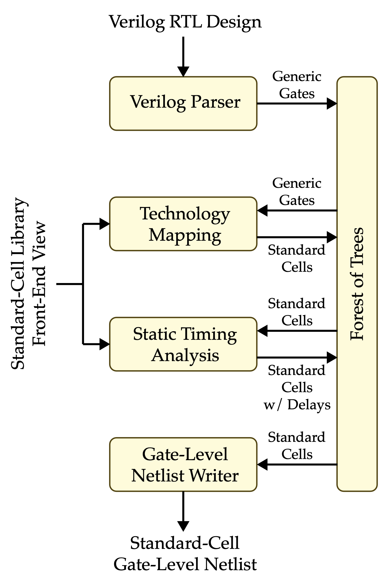

ECE 6745 Project 1: TinyFlow Tape-Out
TinyFlow Front-End
In this project, students will build their own TinyFlow, a very simple standard-cell-based flow. They will develop seven standard cells in TSMC 180nm and the corresponding standard cell behavioral, schematic, layout, extracted schematic, front-end, and back-end views. They will then implement simple algorithms for synthesis (technology mapping via tree covering, static timing analysis) and place-and-route (simulated annealing, 3D maze routing). Finally they will combine this work with open-source Verilog RTL and gate-level simulators and an open-source LVS/DRC tool to create the complete TinyFlow. Even though their TinyFlow will only support a very small combinational subset of Verilog, this project still gives students a unique hands-on opportunity to appreciate every step required in more sophisticated commercial tools. Each group will create a tiny block using their TinyFlow and these blocks will be aggregated into a single unified tape-out on the TSMC 180nm technology node.
The project includes three parts:
- Part A: TinyFlow Standard Cells
- Part B: TinyFlow Front End
- Part C: TinyFlow Back End
Continue working with your group from Part A. You can confirm your group on Canvas (Click on People, then Groups, then search for your name to find your project group).
All students must contribute to all parts!
It is not acceptable for one student to do all of Part A and a different student to do all of part B. It is not acceptable for one student to exclusively work on one algorithm while the other student exclusively works on a different algorithm. All students must contribute to all parts. The instructors will also survey the Git commit log on GitHub to confirm that all students are contributing equally. If you are using a "pair programming" style, then both students must take turns using their own account so both students have representative Git commits. Students should create commits after finishing each step of the project, so their contribution is clear in the Git commit log. A student's whose contribution is limited as represented by the Git commit log will receive a significant deduction to their project score.
This handout assumes that you have read and understand the course
tutorials and that you have attended the lab sections. To get started,
use VS Code to log into a specific ecelinux server, use MS Remote
Desktop to log into the same ecelinux server, source the setup scripts,
and clone your remote repository from GitHub:
% source setup-ece6745.sh
% source setup-gui.sh
% xclock &
% mkdir -p ${HOME}/ece6745
% cd ${HOME}/ece6745
% git clone git@github.com:cornell-ece6745/project1-groupXX
% cd project1-groupXX
% tree
where XX should be replaced with your group number. You can both pull
and push to your remote repository. If you have already cloned your
remote repository, then use git pull to ensure you have any recent
updates before working on your lab assignment.
where XX should be replaced with your group number. Your repo contains
the following files.
.
├── asic
│ └── build-fa
│ ├── 01-verilator-rtlsim
│ ├── 02-iverilog-rtlsim
│ ├── 03-tinyflow-synth
│ │ └── run.py
│ └── 04-iverilog-ffglsim
├── rtl
│ ├── FullAdder.v
│ └── test
│ └── FullAdder-test.v
├── stdcells
│ ├── stdcells.v
│ ├── stdcells.sp
│ ├── stdcells.gds
│ ├── stdcells-rcx.sp
│ ├── stdcells-fe.yml
│ ├── stdcells-be.yml
│ └── verilog-test
│ └── ...
└── tinyflow
├── conftest.py
├── pytest.ini
├── synth
│ ├── tinyv.lark
│ ├── verilog_parser.py
│ ├── StdCellFrontEndView.py
│ ├── TinyFrontEndDB.py
│ ├── TinyFrontEndGUI.py
│ ├── substitute.py
│ ├── techmap_unopt.py
│ ├── techmap.py
│ ├── sta.py
│ └── tests
│ └── ...
└── tinyflow-synth
Go ahead and create a build directory where you will run the synthesis tools and tests:
1. Background on TinyFlow
The complete TinyFlow standard-cell and ASIC design flow is shown below with the front end highlighted in red.

The front end includes two-state RTL simulation, four-state RTL simulation, synthesis, and fast-functional gate-level simulation. In lecture, we discussed an approach to synthesis based on technology mapping with dynamic programming to optimize the area of the final gate-level netlist.
Synthesis itself consists of four key algorithms.

-
Verilog Reader: Parses Verilog RTL design into forest of trees of generic logic gates
-
Technology Mapping: Maps trees of generic gates to trees of standard cells; we will be implementing both an unoptimized and optimized version
-
Static Timing Analysis: Statically analyze all paths to find critical path
-
Gate-Level Netlist Writer: Outputs a standard-cell gate-level netlist in a Verilog file
We provide you the Verilog reader and gate-level netlist writer. In this project you are reponsible for implementing technology mapping and static timing analysis.
TinyFlow represents logic using expression trees stored in a front end database. This section describes the key data structures you will work with when implementing the synthesis algorithms.
A design is represented as a forest of expression trees. Each primary
output has one tree that computes its logic function. Intermediate signals
(wires) can also have trees. The TinyFrontEndDB class is the container
that holds the forest:
TinyFrontEndDB
├── _inputs: { "a", "b", "c" } # primary input names
├── _outputs: { "out1": <tree>, ... } # output name -> tree
└── _wires: { "tmp": <tree>, ... } # wire name -> tree
You can access trees using db.get_tree(name) and modify them using
db.set_tree(name, tree). The db.trees property returns a dict of all
trees (both outputs and wires).
2.2. Nodes
Each node in a tree represents a logic gate. The Node base class has
these key attributes:
type: Name of the gate (e.g.,"AND2","INVX1")children: List of inputs, which can be other Nodes or strings (primary inputs / wire references)
And the following useful methods to determine the type of node.
is_generic_gate()is_standard_cell()is_signal()is_wildcard()
Trees are recursive structures.
NAND2 Node: type="NAND2", children=[INV, INV]
/ \
INV INV Node: type="INV", children=[Signal]
| |
a b Node: type="Signal"
The repr() of a tree shows its structure: NAND2(INV(a), INV(b)).
2.3. Generic Gates
Generic gates represent logic operations parsed from Verilog RTL. They have no physical implementation. TinyFlow supports these generic gates:
- Two-input gates: AND2, OR2, NAND2, NOR2, XOR2, XNOR2
- Single-input gates: NOT, INV, BUF
The NOT and INV gates both compute logical inversion but serve different
purposes: NOT comes from Verilog (~ operator), while INV is the
canonical inverter used after canonicalization.
Node (base class)
├── AND2 (a1 AND a2)
├── OR2 (a1 OR a2)
├── NAND2 (NOT (a1 AND a2))
├── NOR2 (NOT (a1 OR a2))
├── XOR2 (a1 XOR a2)
├── XNOR2 (a1 XNOR a2)
├── NOT (NOT a) <- from Verilog
├── INV (NOT a) <- canonical form
└── BUF (a) <- buffer/passthrough
2.4. Wildcards and Constants
Wildcards and constants are special nodes used to write substitution patterns. They are not part of actual designs but are used to match and transform trees.
Wildcards match any subtree and capture it by name:
_0 = Wildcard('_0') # matches any subtree, captures as '_0'
_1 = Wildcard('_1') # matches any subtree, captures as '_1'
These are used in substitution rules. For example, to replace AND with NAND-INV:
The wildcards _0, _1, _2, _3 and constants _0, _1 are
predefined in TinyFrontEndDB for convenience.
2.5. Standard Cells
Standard cells represent physical standard cells from your cell library and include physical information:
- area_cost: Area of the cell (in lambda^2)
- patterns: List of generic gate patterns the cell can implement
For example, NOR2X1 can implement multiple patterns:
NOR2X1
├── area_cost: 2048
└── patterns:
├── INV(NAND2(INV(_0), INV(_1))) # NOR via De Morgan's
└── INV(INV(INV(NAND2(INV(_0), INV(_1))) # double inverter at output
The patterns tell techmap which generic gate combinations can be "covered" by a single standard cell. Technology mapping uses these patterns to find the minimum-area implementation.
Standard cell classes (INVX1, NAND2X1, NOR2X1, AOI21X1, etc.) are dynamically created when you load the standard cell view.
2.6. Standard Cell View
The StdCellFrontEndView provides information about your standard cell
library. It is loaded from stdcells-fe.yml and passed to
TinyFrontEndDB:
The view provides information needed by synthesis algorithms:
-
For techmap: Cell area and patterns (which generic gate combinations each cell implements)
-
For STA: Timing model parameters:
Cgate: Input capacitance (in fF)tau_d: Intrinsic delay (in ps)tau_t: Load-dependent delay factor (in ps/fF)
The delay through a gate is computed as: delay = tau_d + tau_t * load
where load is the total capacitance driven by the gate's output
2.7. Verilog Reader
We provide you the verilog reader. Feel free to take a look at the
associated grammar located in tinyflow/synth/tinyv.lark. You can use
the following command to read a Verilog file into the TinyFlow front-end
database.
2.8. Gate-Level Netlist Writer
We provide you the gate-level netlist writer. You can use the following command to write the TinyFlow front-end database to a Verilog file.
3. Algorithm: Unoptimized Technology Mapping
Students should implement a substitution rule framework before implementing technology mapping.
3.1. Substitution
Substitution is a core operation used throughout our synthesis framework in TinyFlow. It matches a find pattern against a node and, if successful, produces a new node based on a replace template. Wildcards in the pattern capture subtrees, which are then substituted into the template. For example, to transform an AND gate into NAND-INV form:
tinyflow-synth> a, b, c = Signal("a"), Signal("b"), Signal("c")
tinyflow-synth> sub = Substitute(find=AND2(_0, _1), replace=INV(NAND2(_0, _1)))
tinyflow-synth> result = sub.apply(AND2(OR2(a, b), c))
tinyflow-synth> print(result)
The wildcards _0 and _1 in the pattern capture the inputs x and
y, then those captured values are substituted into the replace template
to produce INV(NAND2(x, y)).
We require students to implement the following functions in
tinyflow/synth/substitute.py to complete the substitution framework:
-
match: Recursively compare the find pattern tree against the input node. Wildcards match any subtree and capture it by name. If types or structure don't match, returnFalse. -
capture: Capture whatever the wildcards in the pattern tree match to. Returns a dictionary mapping the wildcard name to the subtree it matched. -
replace: Build a new tree using the template and the captured subtrees.
Handling Repeated Wildcards
In the lab, match did not track captures, and capture used |= to
merge dictionaries from child recursions. This works for simple patterns
but fails for repeated wildcards like NAND2(_a, _a) (which matches
INV). With |=, the second capture silently overwrites the first, so
NAND2(x, y) would incorrectly match NAND2(_a, _a).
In the project, we pass captures as an argument through match and
capture. When a wildcard is encountered again, match checks if the
new value equals the previously captured value. If they differ, match
returns False. This correctly rejects NAND2(x, y) against NAND2(_a, _a).
Function: match(node, p_node, captures)
Goal: Check if node matches pattern p_node, populating captures dict.
Args:
node: Tree node to match againstp_node: Pattern tree (contains wildcards)captures: Dict to populate with wildcard name → matched subtree
Returns: True if node matches pattern, False otherwise
Function: capture(node, p_node, captures)
Goal: Populate captures dict by traversing a matched pattern.
Args:
node: Tree node (already verified to match)p_node: Pattern tree (contains wildcards)captures: Dict to populate with wildcard name → matched subtree
Returns: The captures dict
Function: replace(t_node, captures)
Goal: Build a new tree from template, substituting captured values for wildcards.
Args:
t_node: Template tree (contains wildcards to substitute)captures: Dict mapping wildcard name → subtree to substitute
Returns: New Node tree with wildcards replaced by captured subtrees
3.2. Unoptimized Technology Mapping
Once you have your substitution framework working, you can use the
substitution framework to implement a naive unoptimized technology
mapping algorithm in tinyflow/synth/techmap_unopt.py. Simply create one
rule for every generic gate and include a corresponding replacement which
implements this generic gate using standard cells. Then apply these rules
to every node in every tree. This unoptimized technology mapping
algorithm makes no attempt to minimize area and will serve as a nice
baseline for your optimized technology mapping algorithm.
Function: apply_rules(node)
Goal: Recursively apply substitution rules to a tree, bottom-up.
Args:
node: Tree node to transform
Returns: Transformed node with matching pattern applied
4. Algorithm: Optimized Technology Mapping
The optimized technology mapping algorithm has three steps:
-
Canonicalize: Replace every generic gate with equivalent tree of just NAND2 and INV generic gates; determine equivalent trees of NAND2 and INV generic gates for each standard cell
-
Cover: Use dynamic programming to determine optimal way to cover each node in a canonicalized tree of generic gates with equivalent standard cells; goal is to minmize total area
-
Traceback: Determine final optimal cover of all trees in the forest
4.1. Canonicalize
With the ability to substitute patterns with a template, we can now build the first step of the technology mapping phase: canonicalization. In order to map between generic gates and a given standard cell library, we need to lower both sides to a common representation and match against each other. Canonicalization is that step. The input is a tree with generic gates (AND2, OR2, NOR2, XOR2, XNOR2, NOT, BUF) and the output is a logically equivalent tree using only NAND2 and INV gates.
Go ahead and implement the canonicalize function in
tinyflow/synth/techmap.py. You will need to define a substitution rule
for each generic gate type (one rule per gate), apply the rules to the
nodes in a tree, and apply it to all trees in the database. The
recommended approach is to write a recursive function to apply the rules
to a tree, but you can implement this however you want.
Function: canonicalize_node(node, rules)
Goal: Recursively convert a tree to NAND2/INV basis.
Args:
node: Tree node to canonicalizerules: List of substitution rules for generic gates
Returns: Canonicalized node using only NAND2 and INV gates
Function: canonicalize(db, view)
Goal: Canonicalize all trees in the database.
Args:
db: TinyFrontEndDB containing trees to canonicalizeview: StdCellFrontEndView (unused, but passed for API consistency)
Returns: None (modifies db in place)
Hint: Use db.get_tree(name) and db.set_tree(name, node) to modify db in place
4.2. Cover
Technology mapping replaces the canonical NAND2/INV tree with library cells from your standard cell library. The goal is to find the minimum-area implementation.
This is where the patterns field from your standard-cell front-end
view comes into play. Each library cell has patterns describing which
NAND2/INV combinations it can implement. For example, NOR2X1 has a
pattern that matches INV(NAND2(INV(_0), INV(_1))). When techmap finds
this pattern in the canonical tree, it can replace all four gates with a
single NOR2X1 cell.
Input: Canonicalized tree (NAND2/INV gates only)
Output: Tree with library cells (INVX1, NAND2X1, NOR2X1, AOI21X1, etc.) with minimum area (optimal for trees)
The DP recurrence is:
Go ahead and implement the cover function in
tinyflow/synth/techmap.py.
Hints:
- Use
repr(node)as the key intoopt_costandopt_patterndicts - Iterate over
view.patternsto try all possible pattern matches - Process children before the current node (bottom-up)
- Signals have zero cost and pass through unchanged
Function: cover(node, view, opt_cost, opt_pattern)
Goal: Compute optimal cost and pattern for each node using bottom-up DP.
Args:
node: Canonicalized tree node to coverview: StdCellFrontEndView containing patternsopt_cost: Dict to populate with node key → minimum costopt_pattern: Dict to populate with node key → best pattern
Returns: None (populates opt_cost and opt_pattern dicts)
4.3. Traceback
Finally, use a top-down approach to reconstruct the optimal technology mapping. Start from the root and recursively apply the optimal patterns. When you are done return the final tree which should exclusively contain standard-cell nodes.
Function: traceback(node, opt_pattern)
Goal: Reconstruct optimal tree by applying best patterns top-down.
Args:
node: Canonicalized tree nodeopt_pattern: Dict mapping node key → best pattern
Returns: New tree with standard cells
4.4. Optimized Technology Mapping
Now put all three steps together in the techmap function located in
'tinyflow/synth/techmap.py`. Call canonicalize first. Then call cover on
every tree in the front-end database. Finally call traceback on every
tree in the front-end database and set each tree to the newly technology
mapped tree.
Function: techmap(db, view)
Goal: Technology map all trees: canonicalize, cover, traceback.
Args:
db: TinyFrontEndDB containing trees to mapview: StdCellFrontEndView containing patterns and cell info
Returns: None (modifies db in place)
5. Algorithm: Static Timing Analysis
Static timing analysis (STA) computes the delay through the mapped netlist and finds the critical path. This is where the timing model from your Part A front-end view is used.
Recall the first-order delay model from Part A:
where tau_d is the intrinsic (parasitic) delay, tau_t is the
load-dependent delay factor, and load is the capacitance the gate
drives. The load includes the input capacitance (Cgate) of all gates
connected to the output.
Input: Mapped tree with library cells
Output: Critical path delay and the path itself
The algorithm has three phases:
-
Phase 1 (compute loads): Traverse the trees and accumulate the load capacitance on each gate. A gate's load is the sum of
Cgatefor all gates it drives. Primary outputs have a fixed output load. -
Phase 2 (compute arrivals): Propagate arrival times from inputs to outputs. Primary inputs have arrival time 0. For each gate:
arrival = max(children arrivals) + gate_delay. -
Phase 3 (find critical path): Find the output with maximum arrival time, then backtrace through the tree following the critical pin at each node.
Your task: Implement compute_loads, compute_arrivals, and
find_critical_path in tinyflow/synth/sta.py.
Hints:
- Use
view.get_cgate(gate_type, pin_idx)to get input capacitance - Use
view.get_parasitic_delay()andview.get_load_delay_factor()for timing parameters - Store results on nodes:
node.load_capfor load,node.timingfor arrival time and critical pin (useTimingnamedtuple) - Primary inputs have arrival time 0
- For arrivals, use memoization via
node.timingto avoid recomputation
Function: compute_loads(db, view, output_load)
Goal: Compute load capacitance for all nodes.
Args:
db: TinyFrontEndDB containing mapped treesview: StdCellFrontEndView for Cgate lookupoutput_load: Fixed load on primary outputs (default 10.0 fF)
Returns: None (sets node.load_cap on each gate)
Function: compute_arrivals(db, view)
Goal: Compute arrival times for all nodes using forward DP.
Args:
db: TinyFrontEndDB containing mapped trees withload_capsetview: StdCellFrontEndView for timing parameters
Returns: None (sets node.timing on each gate)
Function: find_critical_path(db)
Goal: Find critical path by backtracing from max delay output.
Args:
db: TinyFrontEndDB with timing computed
Returns: Tuple of (max_delay, critical_path, critical_output)
Function: sta(db, view, output_load)
Goal: Run full STA: compute_loads, compute_arrivals, find_critical_path.
Args:
db: TinyFrontEndDB containing mapped treesview: StdCellFrontEndView for timing parametersoutput_load: Fixed load on primary outputs (default 10.0 fF)
Returns: None (stores results in db via db.set_sta_results)
Hint: You can set the STA results into DB using the following:
After techmap, you can run STA and view timing results:
tinyflow-synth> sta(db, view)
tinyflow-synth> db.report_timing()
tinyflow-synth> db.report_summary()
The timing report shows the critical path delay and the gates on the critical path.
6. Testing
You can run the tests from your build directory like this.
% cd ${HOME}/ece6745/project1-groupXX/tinyflow/build
% pytest ../synth/tests/substitute_test.py -v
% pytest ../synth/tests/techmap_test.py -v
% pytest ../synth/tests/sta_test.py -v
% pytest ../synth/tests/synth_test.py -v
You can also run all the tests at once.
Just because all of the test passes does not mean your implementation is correct. You are encoraged to add more tests.
7. TinyFlow Front-End
As discussed in lecture, the front end is more than just synthesis. The front-end flow consists of four stages: two-state simulation, four-state simulation, synthesis, and fast-functional gate-level simulation. As paranoid ASIC engineers, we verify our design at each step. We simulate the RTL before synthesis to catch design bugs early, then simulate the gate-level netlist after synthesis to ensure the transformation preserved functionality.
7.1 Two-State RTL Simulation
To ensure functionality, the first step is to verify our design quickly using two-state simulation. Two-state simulation tests only logic values 1 and 0 to ensure basic logic correctness. In this part we will use Verilator to perform two-state simulation.
In this project, we will verify a Full Adder design. We provide the
Verilog RTL in rtl/FullAdder.v and a basic testbench in
rtl/test/FullAdder-test.v. You can run the two-state simulation with
Verilator as follows.
% cd $HOME/ece6745/project1-groupXX/asic/build-fa/01-verilator-rtlsim
% verilator --top Top --timing --binary -o FullAdder-test \
../../../rtl/FullAdder.v \
../../../rtl/test/FullAdder-test.v
% ./obj_dir/FullAdder-test
We have put the above command in a shell script to simplify running two-state RTL simulation.
7.2 Four-State RTL Simulation
Four-state simulation uses four logic values: 0, 1, X (unknown), and Z (high impedance). You get X when a signal is uninitialized, when multiple drivers are fighting (contention), or through propagation of uncertainty (X propagates through logic). You get Z when a wire is floating (nothing is driving it) or from a tri-stated output.
We use four-state simulation to capture these bugs. It is slower than two-state simulation, but it narrows down our issue search space. If your design passes two-state but fails four-state, the problem is usually related to X propagation or uninitialized signals.
Go ahead and run the four-state simulation with Icarus Verilog:
% cd $HOME/ece6745/project1-groupXX/asic/build-fa/02-iverilog-rtlsim
% iverilog -g2012 -o FullAdder-test \
../../../rtl/FullAdder.v \
../../../rtl/test/FullAdder-test.v
% ./FullAdder-test
We have put the above command in a shell script to simplify running two-state RTL simulation.
7.3 Synthesis
Now that we have rigorously tested our Verilog design, we are ready to
synthesize it into a gate-level netlist. For this step, we will use the
batch processing mode of tinyflow-synth instead of the REPL mode we
have previous used. The batch mode takes a run script that describes the
synthesis steps. Populate the 'asic/build-fa/03-tinyflow-synth/run.py'
script with the commands to perform synthesis and STA.
# Load the standard-cell front-end view and create front-end database
view = StdCellFrontEndView.parse_lib("../../../stdcells/stdcells-fe.yml")
db = TinyFrontEndDB(view)
# Read Verilog file into the database
db.read_verilog("../../../rtl/FullAdder.v")
# Optimized technology mapping
techmap(db, view)
# Static timing analysis with output load of 10fF
output_load = 10
sta(db, view, output_load)
# Check design for issues
db.check_design()
# Output reports
db.report_area()
db.report_timing()
db.report_summary()
# Write front-end database to a Verilog gate-level netlist
db.write_verilog("post-synth.v")
Now run the synthesis:
% cd $HOME/ece6745/project1-groupXX/asic/build-fa/03-tinyflow-synth
% ../../../tinyflow/tinyflow-synth -f run.py
This outputs the post-synth.v file. We have put the above command in a
shell script to simplify running synthesis.
7.4 Fast-Functional Gate-Level Simulation
Now that we have our synthesized design, as paranoid ASIC engineers we want to double check that the synthesized design still does what we intended. Synthesis tools may not always be correct! To verify this, we perform fast-functional gate-level simulation (FFGL), which is four-state simulation using the same testbench but with the synthesized design and the behavioral view of the standard cells.
% cd $HOME/ece6745/project1-groupXX/asic/build-fa/04-iverilog-ffglsim
% iverilog -g2012 -o FullAdder-test \
../../../stdcells/stdcells.v ../03-tinyflow-synth/post-synth.v \
../../../rtl/test/FullAdder-test.v
% ./FullAdder-test
If the simulation passes, your synthesized design is functionally correct. We have put the above command in a shell script to simplify running synthesis.
9. Project Submission
To submit your code you simply push your code to GitHub. You can push
your code as many times as you like before the deadline. Students are
responsible for going to the GitHub website for your repository, browsing
the source code, and confirming that the code they want to submit is on
GitHub. Be sure to verify your code is passing all of
your simulations on ecelinux.
Here is how we will be testing your final code submission for Part B. First, we will create a build directory.
% mkdir -p ${HOME}/ece6745
% cd ${HOME}/ece6745
% git clone git@github.com:cornell-ece6745/project1-groupXX
Then we will run all of the tests for the synthesis flow.
% mkdir -p ${HOME}/ece6745/project1-groupXX/tinyflow/build
% cd ${HOME}/ece6745/project1-groupXX/tinyflow/build
% pytest ../synth
Then we will verify that we can succesfully push the full adder through your TinyFlow.